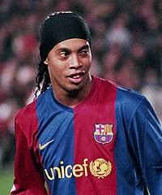
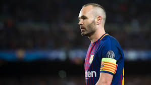
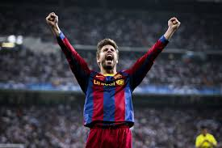
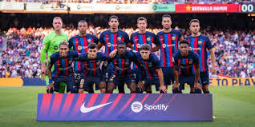
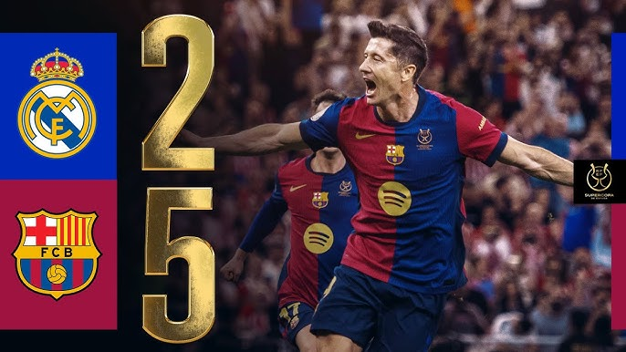
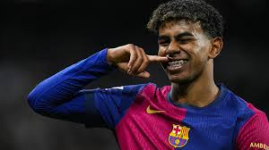

Sobre el FC Barcelona
El FC Barcelona es uno de los clubes más importantes y populares de Europa. Fundado en 1899 por un grupo de jóvenes futbolistas liderados por el suizo Hans Gamper, el club ha crecido hasta convertirse en una institución globalmente reconocida. Con una historia repleta de éxitos, ha sido sede de algunos de los mejores futbolistas de todos los tiempos, como Johan Cruyff, Diego Maradona, Ronaldinho, y Lionel Messi, entre muchos otros.
El FC Barcelona no solo se destaca por sus logros deportivos, sino también por su filosofía de "Més que un club" (Más que un club), un lema que refleja su profundo compromiso con la cultura catalana y la sociedad. El club ha sido un símbolo de lucha, unidad y representación de la identidad catalana, especialmente durante tiempos de represión política.
El club es conocido por su estilo de juego único, basado en la posesión del balón, la presión alta y el fútbol de toque. Este estilo se popularizó durante la era de Johan Cruyff como entrenador y ha sido perfeccionado por entrenadores como Pep Guardiola, quien llevó al Barcelona a la gloria mundial con su innovador enfoque táctico.
A lo largo de las décadas, el Barcelona ha sido uno de los equipos más exitosos a nivel mundial. Ha conquistado múltiples títulos de La Liga, Copa del Rey y, especialmente, la UEFA Champions League. Su rivalidad con el Real Madrid, conocida como "El Clásico", es uno de los enfrentamientos más seguidos y apasionantes en el fútbol mundial.
Los colores azul y grana se han convertido en un símbolo reconocido globalmente, no solo por los aficionados del club, sino por el mundo entero. El estadio Camp Nou, con capacidad para más de 99,000 espectadores, es el hogar de la afición blaugrana y ha sido testigo de innumerables momentos históricos que siguen en la memoria colectiva de los fanáticos.
En los últimos años, el Barcelona ha continuado su legado con una cantera excepcional, conocida como La Masia, que ha producido talentos como Xavi Hernández, Andrés Iniesta y, más recientemente, jugadores como Ansu Fati y Pedri. La filosofía del club sigue siendo el desarrollo de jóvenes promesas para mantener viva su tradición de fútbol de alto nivel.
Historia
El FC Barcelona tiene una rica historia de éxitos tanto en el ámbito nacional como internacional. Desde sus primeros años de existencia, el club ha logrado una serie de hazañas memorables que lo han catapultado a la élite del fútbol mundial.
En los años 50, el Barcelona se consolidó como una de las potencias de España, con la llegada de grandes futbolistas como Ladislao Kubala. La década de los 60 y 70 también vio al club ganando títulos nacionales e internacionales, aunque los momentos más brillantes llegaron con la llegada de Johan Cruyff a principios de los 80.
El impacto de Cruyff fue trascendental. Como jugador y, más tarde, como entrenador, revolucionó el estilo de juego del club. Introdujo el concepto del "fútbol total", que no solo puso al Barcelona en la vanguardia del fútbol europeo, sino que también estableció las bases para el éxito a largo plazo. Su legado se mantiene hoy día en la filosofía del club.
En la década de los 90 y 2000, el Barcelona se convirtió en un equipo dominante en el fútbol mundial bajo la dirección de entrenadores como Frank Rijkaard, quien llevó al equipo a ganar su segunda Champions League en 2006, y, más tarde, Pep Guardiola, quien logró el triplete (Liga, Copa y Champions) en 2009. La era de Guardiola es recordada por su dominio absoluto, su estilo de juego atractivo y el auge de jugadores como Lionel Messi, Xavi Hernández e Iniesta.
El FC Barcelona ha sido testigo de momentos históricos, como la llegada de figuras como Johan Cruyff, quien introdujo el estilo de juego que ha perdurado en el club. A lo largo de las décadas, el Barcelona ha sido un ejemplo de lucha, sacrificio y éxito. Más recientemente, el club ha tenido altibajos, pero sigue siendo una de las instituciones más poderosas en el fútbol, con un legado que sigue influyendo en el deporte.
Estadio Camp Nou
El Camp Nou, inaugurado en 1957, es uno de los estadios más emblemáticos del mundo. Con una capacidad que supera los 99,000 espectadores, es el estadio más grande de Europa y el segundo más grande del mundo, solo detrás de Rungrado 1 de Mayo en Corea del Norte. A lo largo de los años, el Camp Nou ha sido el escenario de partidos históricos que han definido la grandeza del club.
El estadio no solo es la casa del Barcelona, sino también un punto de referencia para todos los amantes del fútbol. Cada partido en el Camp Nou es una experiencia única, con la "marea azulgrana" llenando las gradas y apoyando al equipo en cada momento. La atmósfera en los días de partido, especialmente durante los clásicos contra el Real Madrid, es incomparable.
El Camp Nou también ha sido sede de eventos internacionales, como la final de la UEFA Champions League en 1989, 1999 y 2021, y de otros eventos deportivos y culturales que han marcado la historia del club. En 2014, el estadio comenzó una serie de reformas, conocidas como el "Espai Barça", que tienen como objetivo modernizar y ampliar las instalaciones, haciendo del Camp Nou una de las arenas más avanzadas del mundo.
Además de ser el hogar del equipo, el Camp Nou alberga el Museo del FC Barcelona, que cuenta con una impresionante colección de trofeos, camisetas y recuerdos históricos del club. Es una visita obligada para todos los seguidores del Barcelona y para los amantes del fútbol en general.
Jugadores Destacados
A lo largo de su historia, el FC Barcelona ha contado con algunos de los mejores jugadores del mundo. Haz clic en el nombre del jugador para ver más detalles.

Lionel Messi

Johan Cruyff

Ronaldinho

Andrés Iniesta

Gerard Piqué
×

Galería de Fotos
Explora algunas de las mejores fotos de los jugadores, el estadio y los eventos del FC Barcelona.


Estadísticas del Club
Conoce las estadísticas más relevantes del FC Barcelona a lo largo de su historia. Desde los máximos goleadores hasta los jugadores con más títulos, descubre los datos que han marcado la historia del club.
Máximos Goleadores
- Lionel Messi - 672 goles
- César Rodríguez - 232 goles
- Luis Suárez - 198 goles
Jugadores con Más Partidos
- Xavi Hernández - 767 partidos
- Lionel Messi - 778 partidos
- Andrés Iniesta - 674 partidos
Jugadores con Más Títulos
- Lionel Messi - 34 títulos
- Gerard Piqué - 31 títulos
- Andrés Iniesta - 31 títulos
Noticias Recientes

Victoria en el Clásico
Fecha: 12 de enero, 2025
El FC Barcelona ha logrado una victoria impresionante en el Clásico contra el Real Madrid, se consagran como campeones de la super copa de españa con un contundente 5:2.

Fichaje de Jugador Estrella
Fecha: 19 de julio, 2022
El Barcelona ha anunciado oficialmente el fichaje de un jugador estrella, reforzando el ataque del equipo. Los aficionados están entusiasmados con la llegada de esta nueva estrella.

La Masia Produce Otro Talento
Fecha: 5 de marzo, 2024
Un nuevo talento ha emergido de la cantera de La Masia, y se espera que haga su debut en el primer equipo en las próximas semanas. La filosofía de formación de jóvenes promesas sigue siendo el corazón del club.